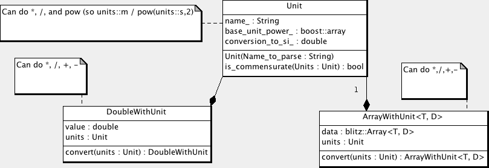
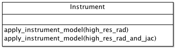
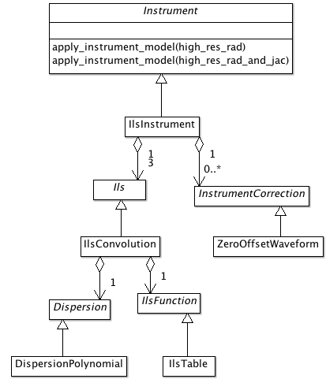

Developer’s Information¶
Introduction¶
The rest of the user’s guide is concerned with Level 2 from a user’s point of view, dealing with things like “How do a run the software” and “How do a I build it”. This document is concerned with Level 2 from a Developer’s point of view. It describes the overall software architecture, how to make changes to the system, etc.
Build System¶
We use the same build system used by many open source projects, the standard “configure/make” cycle used to build many linux packages. The details of actually building the software is covered in the compilation section.
We’ll give a little more detail in this section on using the build system from a developer’s point of view, e.g, “how do I add a file?”.
Autotools¶
The system is built using the standard GNU autotools chain. If you are familiar with this, then this system is pretty standard. Things are set up as with most projects. Different projects seem to put local autoconf macros in different places, on this system they are in config/m4.
If you are only vaguely familiar with autotools, it can be a bit confusing about what files we generate, and which are derived files.
The file ./booststrap can be used to initial generate the derived files.
The input files are configure.in and Makefile.am. From these files the ./configure and Makefile.in are generated. In addition to these file, there are local autoconf macros in config/m4, and derived files used by configure in the directory config. You can generally ignore these - you really need to know how to use autotools before you want to mess around with the autoconf macros (it isn’t hard, just a bit obscure).
To make it manageable, Makefile.am is broken into a number of pieces that are included into the top level Makefile.am file. Each directory with code has its own .am file that describes the code in that directory, for instance exe/full_physics/full_physics.am.
Once these files are generated, the actual build is done by ./configure and make cycle that should be familiar if you’ve installed any of the GNU software before. This generates an actual Makefile.
The specific tools used for each piece:
- automake - most commonly used piece. This takes the various ”.am” files and produces a Makefile.in file. This needs to be run whenever you change one of the automake files.
- autoconf - produces the “configure” file. This takes the macros and configure.in file and produces the configure file. Need to run this when configure.in has been changed.
- aclocal - collects all the local macros and prepares them for use with autoconf. Need to run this if you change any of the local ”.m4” files.
- libtoolize - prepares libtool for use with automake. Only need to run this to update the version of libtool used.
If can be easier to just run automake and the other tools by hand when needed, particularly if you only change something once in a while.
However if you are going to regularly be modifying things (e.g., you are a developer), it can be convenient to enable “maintainer mode” in the Makefiles. This adds rules in the Makefile to rebuild the ./configure and Makefile.in files as needed. To turn this on, you add the option “–enable-maintainer-mode” when you do configure, e.g, ”./configure –enable-maintainer-mode”.
There is nothing magic about maintainer mode, it just runs automake and autoconf when input files have changed.
As you use autotools more, you may want to consult the Automake manual. A very nice introduction to autotools is Autotools: a practitioner’s guide to Autoconf, Automake and Libtool.
Autotools Problems¶
Autotools has been showing its age and haphazard design for some time (often referred to as “auto-hell” for example see: “Why the KDE project switched to CMake”), however right now there isn’t an obvious replacement. Most FOSS project still use these tools, so for now we’ll continue to do the same. KDE recently moved to CMake, but right now they are the only large project to use CMake.
For a user, autotools stuff work fine, all of the complication is in writing the input files during development. Fortunately, Level 2 Physics isn’t particularly complicated compared to other projects (like KDE), so for now this complication is manageable.
In the future, if there is a clear replacement for autotools, we may want to move this system to that.
Adding New Code¶
There are two steps to adding new code:
- Update the corresponding ”.am” file
- Run automake (either by hand or automatically if you did “–enable-maintainer-mode”
The easiest way to add code is to open one of the existing ”.am” files such as “implementation.am” and copy what is done there. Code is added by adding to make variables. There are typically 4 files associated with a new piece of code (one or more may be missing, in which case you just leave them off)
- The header file (”.h”) gets added to “fullphysicsinc_HEADERS”.
- The source file (”.cc”, ”.F90”) get added to “libfp_la_SOURCES”.
- The SWIG interface file (”.i”) gets added to “SWIG_SOURCES”.
- The unit test file (“_test.cc”) get added to “lib_test_all_SOURCES”.
After added the code, run automake to regenerate the Makefile.in
Platform Information¶
Mac¶
The Mac does not put debugging information into an executable when you build it. Instead, there is a separate step using the “dsymutil” program. So if you want to debug l2_fp or test_all you need to first run dsymutil to get debugging information into it.
Design Information¶
Unit classes¶
We track physical units in our code (e.g., a velocity may be marked as “m/s”). This handles conversions when needed (e.g., add 10 m/s to 15 km/hr), and detects error with units that don’t match (e.g., add 5 m to 3 hr).
The unit tracking is handled by the class “Unit”. Two closely related classes are DoubleWithUnit and the template ArrayWithUnit<T, D>. These two classes contain units along with a double or blitz::Array<T, D>.
The class Unit does dimensional analysis. We track the power of each of the SI base units. In order, these are meter, kilogram, second, Kelvin, Ampere, mole, candela, steradian, radian, photon
Note that steradian and radian are actually dimensionless, but it is useful to track them. Also photon is a photon count, which doesn’t really have units either. But it is useful to track because we can determine the photon count at a particular wavelength to convert to cm^-1.
The units have a “name” associated with them. This is a free form string. The intent is this represents the units is a human readable form. We need to have this attached rather than automatically generated because depending on the context we may represent the units in different manners. For example, the radiance units are usually given as “W / m^2 / sr / cm^-1”. This is exactly the same as “0.01 kg * m / s^3 / sr”, but the latter would be a fairly confusing way to label the radiance. There is no real way to have a program know how we want the unit represented as a string, so the easiest thing to do is to just attach it.
Note there is no problem going the other way. Given a string, we can uniquely parse it to give a Unit object. This is supported by the unit constructor, which can take strings such as “m/s” or “W / m^s / sr / cm^-1”.
We can combine units using the operation “*”, “/” and “pow’. These handle the dimensional analysis, and creates a basic name. The name is generated by simple combination rules, but you may want to override the generated name with a preferred string. So for example kg * m / s * s can be called “N” for Newton.
The DoubleWithUnit and ArrayWithUnit can be combined with the normal math operations of *, /, +, and -. You can also convert to a new set of units using “convert”.
Compile vs. Runtime classes¶
The Unit class described in the previous section has the feature that the units are determined at run time. There is another class of unit libraries such as boost::units where the determination is at compile time. This is one of those classic design trade offs.
The compile time unit classes have the significant advantage that the units are determined at compile time. There is no runtime cost, everything is determined at compile time. All unit errors are also determined at compile time. However, it has the disadvantage that you need to know what the units are at compile time.
In our case, the overhead of the units class is minimal. We are pretty much insensitive to time overhead except in the innermost wavenumber/wavelength loop in the forward model. All of our unit calculations are outside of this loop, so the minor overhead in run time is acceptable. We want to be able to determine the units at run time, so for example OCO has wavelength given in microns while GOSAT has wavenumber given in cm^-1. Which kind of processing we are doing is determined at run time by the contents of the Lua configuration file.
Instrument¶
The Instrument class is used by the ForwardModel to model the measurement instrument. This class takes the radiance values calculated on the high resolution spectral grid (using the RadiativeTransfer and SolarModel classes), and produces a low resolution spectral grid of radiance values. This data is what our instrument model would have seen if it was to observe the high resolution spectral grid.
Any object of the Instrument class can be used, this just needs to supply one major function “apply_instrument_model”. There are two variations of this function, one that only processes the radiance data and one that also processes the Jacobian of the radiance data with respect to the StateVector.
If you are implementing a new instrument, you just need to match the interface specified by Instrument. However, in practice your we have a instrument model as described in the OCO ATB. To implement this, we divide the different pieces of the instrument calculation into different pieces, as described in the next section.
IlsInstrument¶
The particular implementation we use in our code is described in the following diagram:
We divide the calculation into two major pieces. The modeling of the Instrument Line Shape (ILS) is done by the Ils class. There is one object for each spectral band. In principle we could use different models of of the ILS, and indeed a different model for each band. But in practice, we always do a convolution, using the IlsConvolution class. We then apply zero or more instrument corrections. This is where we do things like a zero offset correction or a continuum correction.
Ils¶
The Ils class is responsible for doing modeling the Instrument Line Shape. There is one main function that needs to be implements “apply_ils”. This has two variations, with and without also calculation the Jacobian.
You can use any object of the Ils class, but in practice we have one implementation we use IlsConvolution. This divides the calculation into three pieces. The dispersion calculation is done by a Dispersion object, this determines the wavenumbers for each of the instrument pixels we will be calculating. The IlsFunction determines the values we will be convolving with for a particular pixel And the IlsConvolution class actually convolves the high resolution spectra with the IlsFunction to get the low resolution instrument spectra.
InstrumentCorrection¶
After the ILS is done, zero or more instrument corrections can be applied. There is just one major function that needs to be supplied, “apply_correction”. This has two flavors, with and without Jacobian calculations.
Dispersion¶
The Dispersion object determines the wavenumber of each instrument pixel. It supplies one function, “pixel_wavenumber”.
IlsFunction¶
The IlsFunction object supplies one function, “ils”.
Lua Config¶
Introduction¶
We generate our configuration files in Lua. Lua is a simple language that integrates well with C/C++, and is ideal for things like configuration files.We use the package Luabind for wrapping our C++ code for use in the configuration files.
Documenation:
- Lua documentation
- Lua Wiki
- Luabind
- We have stashed copies of the Lua and Luabind manuals in the source tree under doc. If you are off the web, or there is a problem with one of these web sites you can consult the documentation there.
Lua For the Impatient¶
You should consult the documentation for details, but Lua is a very simple language (which is why we selected it). If you have used any procedural/OO language you should be able to pick up the syntax quickly. A few things to note:
- Comments start with “–” and go to the end of the line (like C++ “//”).
- Classes are slightly different in Lua. It doesn’t directly support them, but supports “Tables” where are fairly similar. Like python, all function that you would think of as object oriented take “self” as the first argument. You can call a function on a class using the standard ”.”, but if you do that you need to explicitly pass the object is, so “foo.func(foo, arg1, arg2)”. As a special notation, you can instead use ”:” which automatically adds the object as the first argument, so “foo.func(foo,arg1, arg2)” is exactly the same as “foo:func(arg1, arg2)”. By convention, you should use the second form.
Wrapping C++ code¶
To create classes in Lua, we need to be able to call C++ code. The connection between Lua and C++ is handled by the Luabind library. This is a template based library that automatically generates the glue code between the two languages.
The registration of the C++ code is handled by the RegisterLua class.
One approach to this is to have a central function that registers everything, and as we add classes update that central function. An alternative is the one selected here, were we have a more decentralized registration. Classes set up the registration in their own area, and then simple get listed and needing registration in the file “register_lua.cc”. It would be nice to decentralize this completely, but I could never figure out a way to actually do this.
So registration involves 2 steps:
- Add the registration code to the class code (e.g., for Foo, this is the file “foo.cc”).
- Add the class to the list of classes in the function RegisterLua::register_lua found at “lib/Lua/register_lua.cc”
The registration code is cookie cutter, so we have macros to help do this. The registration is different depending on if we have a derived class with a base class, or a class that doesn’t derive from another (or at least one that we want to tell Lua about).
An example of this in level_1b.cc:
#ifdef HAVE_LUA
#include "register_lua.h"
REGISTER_LUA_CLASS(Level1b)
REGISTER_LUA_END()
#endif
In level_1b_hdf.cc:
#ifdef HAVE_LUA
#include "register_lua.h"
REGISTER_LUA_DERIVED_CLASS(Level1bAcos, Level1b)
.def(luabind::constructor<std::string, std::string>())
REGISTER_LUA_END()
#endif
Then in register_lua.cc, we add:
REGISTER_LUA_LIST(Level1b);
REGISTER_LUA_LIST(Level1Hdf);
Note that you don’t need to put all the member functions into the Lua registration, just the ones you want to call in Lua. For many classes, this will just be the constructors. We use Lua configuration files for creating the objects needed in Level 2 Full physics, not to do major computation with it. That is more what we do with the Python wrappers. Lua is a small language that is ideal for integration in the C++ code, but it is no replacement for Python, nor is it meant to be.
Pretty much all our classes are Printable. We’ve put the magic incantation in place for classes in the macros (this ties the Lua function __tostring__ to the C++ code print_to_string). If you have a class that is not printable, we’ll need to add a macro to support that.
We normally use Lua through our C++ code. It can be useful, particularly when testing, to go the other way. We define the function “luaopen_fullphysics” to go the other way, call in Lua like:
require("libfull_physics")
Note that you should use the installed library, like we do with python (i.e., do a “make install”).
You will need to make sure that the library is on the PATH. Lua uses an odd syntax for its path, an example of using it would be:
LUA_CPATH=install/lib/?.so lua
require "libfull_physics"
l1b = Level1bAcos("filename","soundingid")
Writing Configuration Files¶
The configuration file purposely have very minimum requirements. To use in Level 2 full physics, you just need to create a handful of global variables however you would like. These variables are listed in the config.lua file found in input/gosat/config/config.lua. This includes things like “forward_model” and “solver”.
However, most of the time you will want to use a “standard” run with possibly some local modifications. The “standard” run uses a nested set of files:
- config_common.lua - General purpose routines for creating Level 2 objects
- base_config.lua - The “standard” way of building things
- dynamic_config.lua - Things that change from one run to the next, but in a systematic way (e.g, sounding_id, surface_type)
- config.lua - The local config file. In the simplest case, just include dynamic_config.lua without change. But can contain local modifications.
It turns out that constructing objects tends to follow the same pattern for the many kinds of Level 2 objects we create. We have introduce a “Creator” Lua class (not Level 2 C++ class), along with a few derived classes to handle common scenarios. The UML diagram of this code:

Debugging Configuration Files¶
Because the configuration files are actual Lua code, you can get errors in the file.
If a Lua error occurs, you can optionally turn on diagnostic messages by setting the diagnostic flag to true in the Lua file. This will print some tracing messages, which will help you locate the portion of the Lua where an error occurs.